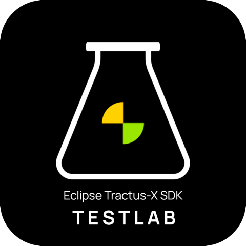

Tutorial site
E2E Tests in Eclipse Tractus-X
Create automated tests for Eclipse Tractus-X products using AI, with the Eclipse Tractus-X TestLab testing framework. Build an end-to-end test in about an hour in the Test Suite IDE, and run it on every pull request.
- Community Days 2026
- Developers
- With AI
- Added
- Updated
- Version
- v1.0
- Authors